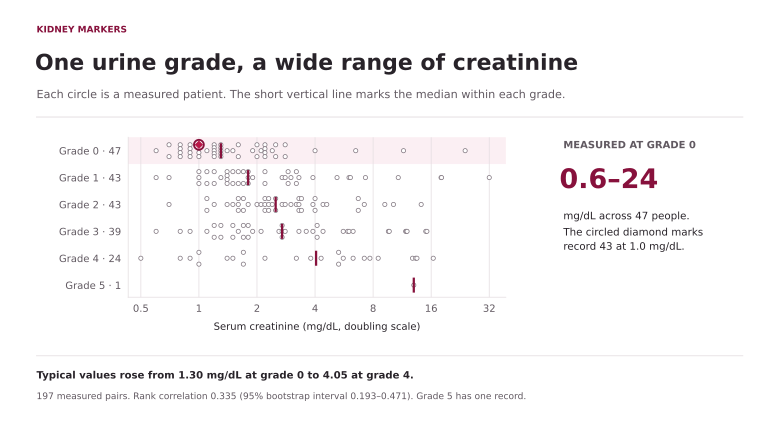
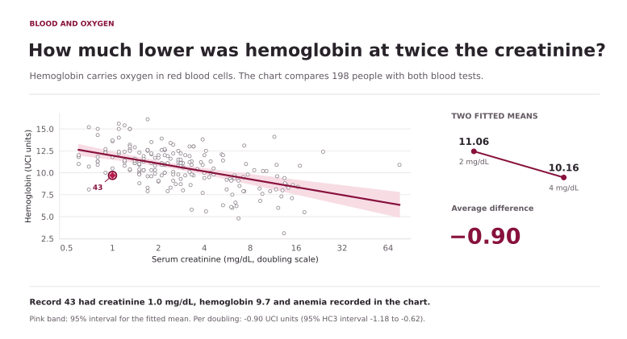
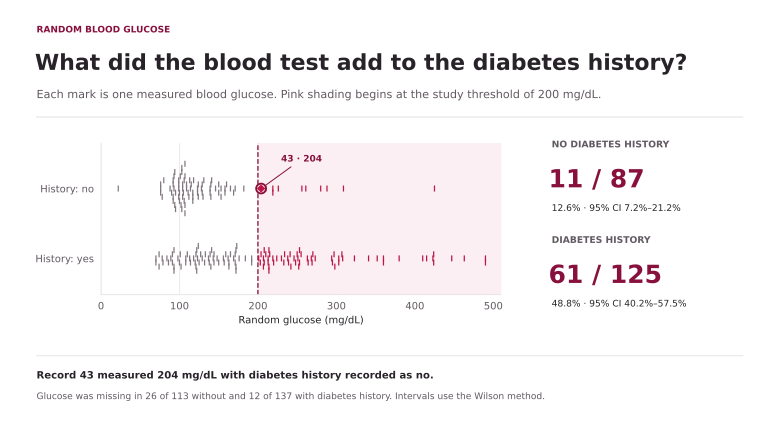
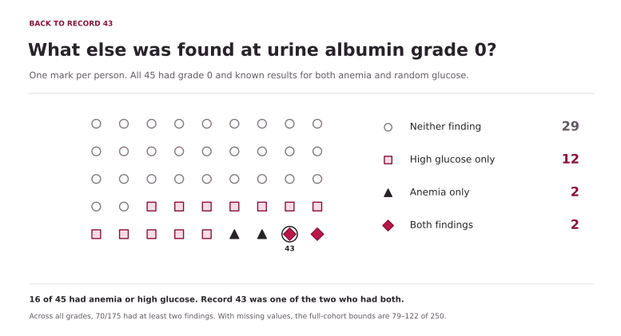

从肾脏指标到贫血与高血糖
第 43 号慢性肾病（CKD）病历中，尿白蛋白是最低的 0 级，病史明确记录无糖尿病。血检还能告诉我们什么？在 UCI 标记为 CKD 的 250 份记录中，我们先看肾脏如何保留蛋白和清除废物，再看血液运氧与血糖，最后回到这位患者。
一、白蛋白等级低的 CKD 患者，血肌酐也一定低吗？
临床评估 CKD 时，尿白蛋白和肾小球滤过率提供两方面的信息。UCI 记录中的 al 提供 0–5 的白蛋白等级，sc 提供血肌酐。我们比较同一条记录的两个指标。数据字典未提供尿白蛋白/肌酐比（UACR）或分级对应的具体浓度，因此保留 UCI 原等级；肾功能分期还需要适当的 eGFR 等资料。KDIGO CKD 评估指南
组间有趋势，同一级内的肌酐差异仍然很大。197 人有配对实测值。0–4 级的肌酐中位数依次为 1.30、1.80、2.50、2.70 和 4.05 mg/dL。0 级 47 人的中间一半在 1.00–2.20 mg/dL，实际范围为 0.6–24.0 mg/dL。4 级 24 人的实际范围为 0.5–16.4 mg/dL，两组有明显重叠。
全部 197 人的 Spearman 秩相关为 0.335（患者 bootstrap 95% CI [0.193, 0.471]）。5 级只有 1 人，其肌酐为 13.0 mg/dL；排除此人后，相关系数为 0.326。另有 41 人缺白蛋白等级，这 41 人均有肌酐读数，中位数为 3.40 mg/dL。

二、肌酐较高的患者，血红蛋白通常低多少？
贫血是 CKD 常见的并发症。上一个问题显示，患者之间的肌酐差异很大。这里用 198 名同时测得血肌酐和血红蛋白的患者，估计两位肌酐相差一倍的患者在平均血红蛋白上相差多少。NIDDK 对 CKD 与贫血的说明
血肌酐为另一位患者的两倍时，拟合的平均血红蛋白低 0.90 个原始记录单位（95% CI [0.62, 1.18] 个单位）。Spearman ρ = −0.515 [−0.614, −0.396]。UCI 将血红蛋白单位记为 gms，未注明体积分母，全文沿用原值。
扣除肌酐最高的那条记录后，估计差为 −0.98 [−1.23, −0.72]。在年龄、肌酐和血红蛋白都有记录的同一批 192 人中，未调整的差为 −0.87，加入年龄后为 −0.89 [−1.18, −0.60]。肌酐超过 16 mg/dL 的配对只有 5 条，高端趋势的证据有限。这是不同患者之间的横断面比较；数据无法追踪一位患者随时间的血红蛋白变化或确定贫血病因。

三、病史明确记录无糖尿病时，还有多少患者出现明显高血糖？
前两项检查反映肾脏和血液方面的表现。临床记录还提供糖尿病病史和随机血糖，可以直接查看二者是否一致。250 人的糖尿病病史均明确记为“有”或“无”。我们把随机血糖 ≥200 mg/dL 记为达到阈值的一次读数。
| 糖尿病病史 | 总人数 | 未测 | 达到阈值 / 已测 | 比例（Wilson 95% CI） |
|---|---|---|---|---|
| 记录为无 | 113 | 26 | 11 / 87 | 12.6%（7.2%–21.2%） |
| 记录为有 | 137 | 12 | 61 / 125 | 48.8%（40.2%–57.5%） |
病史记录为无的 113 人中，至少有 11 人出现这一读数。若该组 26 名缺测者全部低于或全部达到阈值，113 人中的比例界限分别为 9.7% 和 32.7%。一次随机血糖 ≥200 mg/dL 的诊断意义取决于典型症状、高血糖危象或确认性检测等信息；本数据缺少这些资料，无法据此统计新增糖尿病病例。ADA 2026 糖尿病诊断标准

四、把检查放回同一位患者身上，哪些线索会共同出现？
前三问的实测人群并不完全相同。要知道多少人兼有几种表现，必须逐条对齐患者记录。这一步使用三个可以从原始记录直接判定的标记：白蛋白原分级 ≥1、病历明确记录贫血、以及随机血糖 ≥200 mg/dL。贫血以病历的 ane 字段为准；白蛋白 ≥1 表示原分级有读数高于 0，不对应 KDIGO 的 A 分期。
三项均有记录的 175 人中，70 人（40.0%）兼有至少两项，11 人三项都有。29 人三项均无，76 人恰有一项，59 人恰有两项。白蛋白为 0 级且三项均可判断的 45 人中，16 人（35.6%）仍有其他线索：12 人仅血糖达到阈值，2 人仅记录贫血，另 2 人两者都有。这解释了为什么从第一张图的“白蛋白 0 级”无法推断患者的其余检查。
在全部 250 人中，75 人有至少一项缺失。利用每个人已经知道的结果，即使将未知项全部按阴性处理，也已有 79 人达到两项；若未知项全部按阳性处理，最多 122 人。因此全组可由数据确定的范围是 31.6%–48.8%。这是缺失记录容许的上下限，和抽样置信区间含义不同。

研究范围与复核
UCI CKD 数据集共 400 条记录。本分析纳入全部 250 条标记为 CKD 的记录，采用横断面设计，每行作为一名患者的记录处理。数据没有可核对不同就诊是否属于同一人的持续身份标识。主分析按每题所需字段选取实测值；若一律要求 24 个解释变量齐全，CKD 患者只剩 43 人。本项目把缺失、异常读数和完整病例分析用作敏感性检查。各题可用人数 · 400 人缺失值与尺度分析附录
- 白蛋白为有序等级，使用平均秩 Spearman 相关，按患者重抽 5,000 次取 95% 百分位区间。5 级单例另作敏感性检查。
- 血红蛋白对 log₂（肌酐）拟合直线，斜率直接给出肌酐每翻倍的平均差。报告 HC3 异方差稳健标准误和 t 区间。主模型 t(196) = −6.32，p < .001，R² = 0.261。年龄调整和暂时排除最高肌酐值用于检查结果稳定性。模型诊断
- 随机血糖的实测比例使用 Wilson 区间。把 24 字段完整的患者单独分析时，记录无糖尿病组为 3/15，记录有糖尿病组为 17/28。对计数较少或缺测较多的组，保留分子、分母及不确定性。
- 这些问题是在原课程分析后形成的探索性问题。所有区间均为逐项 95% 区间。病因、治疗效果、随访进展和一般 CKD 人群患病率均超出这批记录可回答的范围。版本、种子及原始数据校验值 · 复跑命令